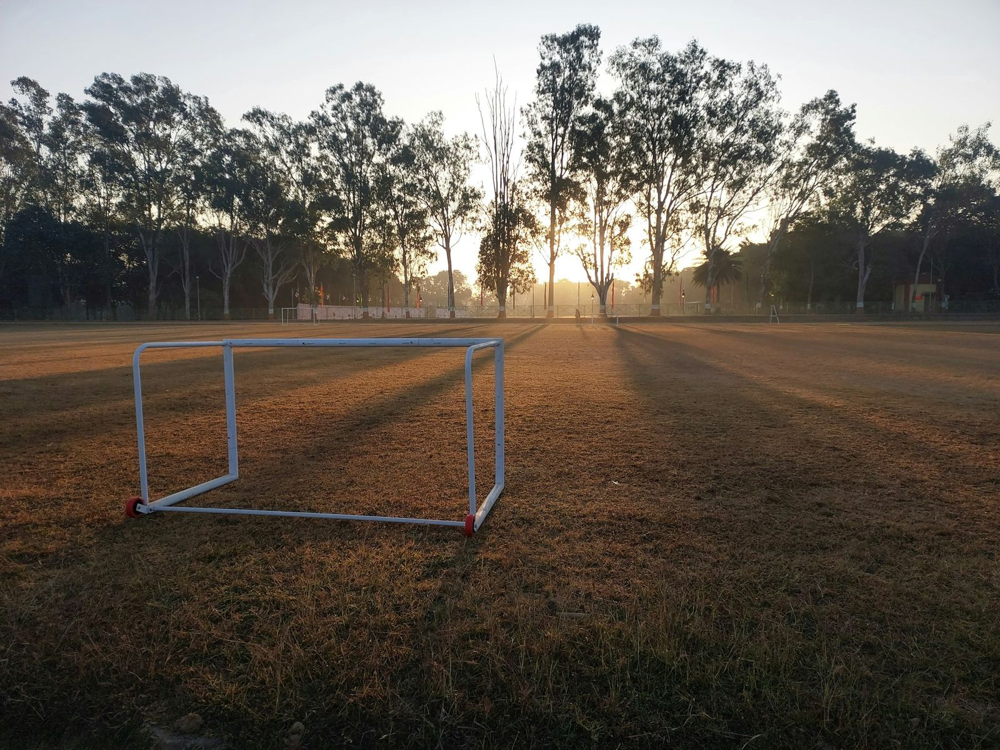

Who we see / Therapy for teens, and SPACE for parents, in South Carolina and North Carolina
Anxious teens grow up into anxious adults. It doesn't have to go that way.
Teens feel more pressure than ever, from school, sports, social media and themselves. We help them build confidence and real coping skills, and we help parents know what to do at home.

Before you scroll
Who's reading this?
If you found this page on your own, that took something.
You don't have to have a name for what's going on. Maybe you can't stop thinking about food, or a mistake from last week's game, or a thought you'd never say out loud. Talking to someone who has heard it before helps more than people expect.
Your sessions are private. We'll explain exactly what gets shared with your parents before we start, and it's less than you think.
You know something is off, and you're tired of guessing what to do about it.
Maybe it's the stomachaches before school, the questions asked forty times, the meals that get smaller, or a teen who used to love their sport and now dreads it. You don't need to be sure it's "bad enough." Call, and we'll talk it through.
If your teen won't come to therapy, you can still start. That's what SPACE is for.
Teen counseling
Teens who are overwhelmed and won't always say so.
Today's teens compare themselves to everyone, all the time, and many of them have decided that anything short of perfect is failure.
We help teens challenge the negative thoughts that keep them stuck and build confidence that doesn't depend on grades, likes or playing time. Sessions are by video, which most teens find easier than sitting across from an adult in an office.
Teens talk to their therapist privately. Parents are part of the intake and stay informed about the big picture and anything that affects safety, and we talk through what that looks like at the start so nobody is surprised.
What we see in teens
Your part as a parent
Close enough to help, far enough for them to talk.
Teens open up when they trust that their sessions belong to them. That privacy is what makes the work possible.
You still have a part. We check in with you along the way, you hear how things are going overall, and you always hear about anything involving safety. We will also tell you what tends to help at home and what tends to make things harder.
Where parents come in
SPACE for parents
When the anxious one won't come to therapy.
SPACE (Supportive Parenting for Anxious Childhood Emotions) was developed by Dr. Eli Lebowitz at the Yale Child Study Center. It works through parents, so your teen doesn't have to participate at all.
Spot the accommodations
When a teen is anxious, families start working around it. Answering the same question again, speaking for them, ordering for them at restaurants. It comes from love, and it keeps the anxiety going.
Say it supportively
You learn to show your teen that you understand how hard this is and that you are confident they can handle it. Both at once.
Step back, one at a time
Together we pick one accommodation to reduce, plan exactly how, and prepare for the pushback. Then the next one.
Watch them surprise you
Teens build resilience by finding out they can cope. SPACE has strong research support for anxiety and OCD in young people.
Questions
What parents ask first.
Something else on your mind? Ask it on the free call, or text (843) 212-6965.
What ages do you see?
We see adolescents and adults. If you are not sure whether your teen is the right age, ask on the consult call. For parents, SPACE is another way in.
Do I need to be in the session?
Usually not. Teen sessions are one-on-one, with parent check-ins along the way. With SPACE, it is only you.
Will you tell me what my teen says?
Not word for word. Teens open up when they trust their sessions are private. You will hear about overall progress and anything involving their safety, and we agree on the details together at intake.
Do you take insurance for teens?
Yes, the same plans we accept for adults. See fees and insurance.
You don't have to figure this out alone either.
Whether the call is about your teen or about you as a parent, it is free and you can ask anything.
info@resilientspiritsc.org
Current clients: client portal